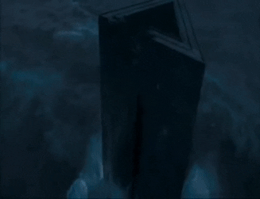
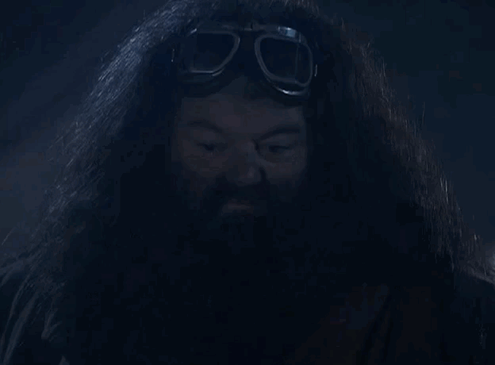

Новый побег из Азкабан: так ли надежна "самая суровая" тюрьма магического мира?
Сегодня стали известны подробности недавнего побега знаменитого преступника, имя которого
нас попросили не называть силы магического правопорядка, дабы не сеять панику среди волшебников.
Однако нельзя не отметить, что причины для паники всё-таки есть.
Как мы знаем, 16 лет назад из тюрьмы Азкабан был совершён самый массовый побег за всю ее историю,
что сильно подорвало доверие в системе исполнения наказаний для особо опасных преступников.
Новое министерство магии попыталось решить данную проблему, проведя масштабную реформу, в ходе
которой было принято решение отказаться от использования дементоров и усилить надзор за
заключенными, чтобы на ранних этапах предупреждать попытки побега.
Очевидно реформа провалилась, ведь сегодня мы стали очевидцами очередного "внепланого освобождения",
причем преступник, которого мы не называем, не считался особо опасным. Ходят слухи, что он выдумал
большую часть своих обвинений, дабы заполучить известность.
На данный момент информации не много, но представитель сил магического правопорядка,
знакомый с ситуацией, сообщил нашей редакции, что после известия о побеге в ведомстве
началась паника, каждое ответственное лицо в первую очередь занимается не поимкой преступника,
а попыткой подставить коллегу под основной удар. Что ж, будем надеятся, что преступник будет
пойман каким-нибудь безответственным лицом.

Секреты Хагрида: правда о таинственных созданиях, которых он скрывает
Каждый ученик Хогвартса знает Рубеуса Хагрида как добродушного гиганта, который с радостью помогает
ученикам и служит связующим звеном между магическим миром и чудесами природы. Но что, если мы скажем,
что Хагрид скрывает гораздо больше, чем просто свои любимые магические существа? В глубинах Хогвартса,
в самых укромных уголках, он, возможно, держит еще более мистических и опасных созданий, о которых
никто не знает.
Хагрид всегда был сторонником защиты волшебных существ, особенно тех, которых общество считало опасными
или странными. Он спасал драконов, ухаживал за горбатым медведем и даже жил с великанами. Но есть ли
среди его питомцев более темные и опасные создания, о которых нам пока ничего не известно?
Не так давно, старший профессор по защите от темных искусств, доктор Лайонел Кларк, опубликовал свою
теорию о том, что Хагрид на самом деле держит в своей хижине существ, способных нарушить хрупкий баланс
магического мира. Согласно его исследованиям, Хагрид мог бы хранить в укромных уголках своего дома созданий,
такие как зомби или дементоры, которые, хотя и редки, известны своей способностью манипулировать
человеческим сознанием и магией.
"Я уверен, что он знает гораздо больше, чем он позволяет себе показывать. Хагрид никогда не был простым
человеком, и его любовь к магическим существам скрывает более сложные отношения с темными силами, чем мы
можем себе представить"
- Утверждает Кларк.